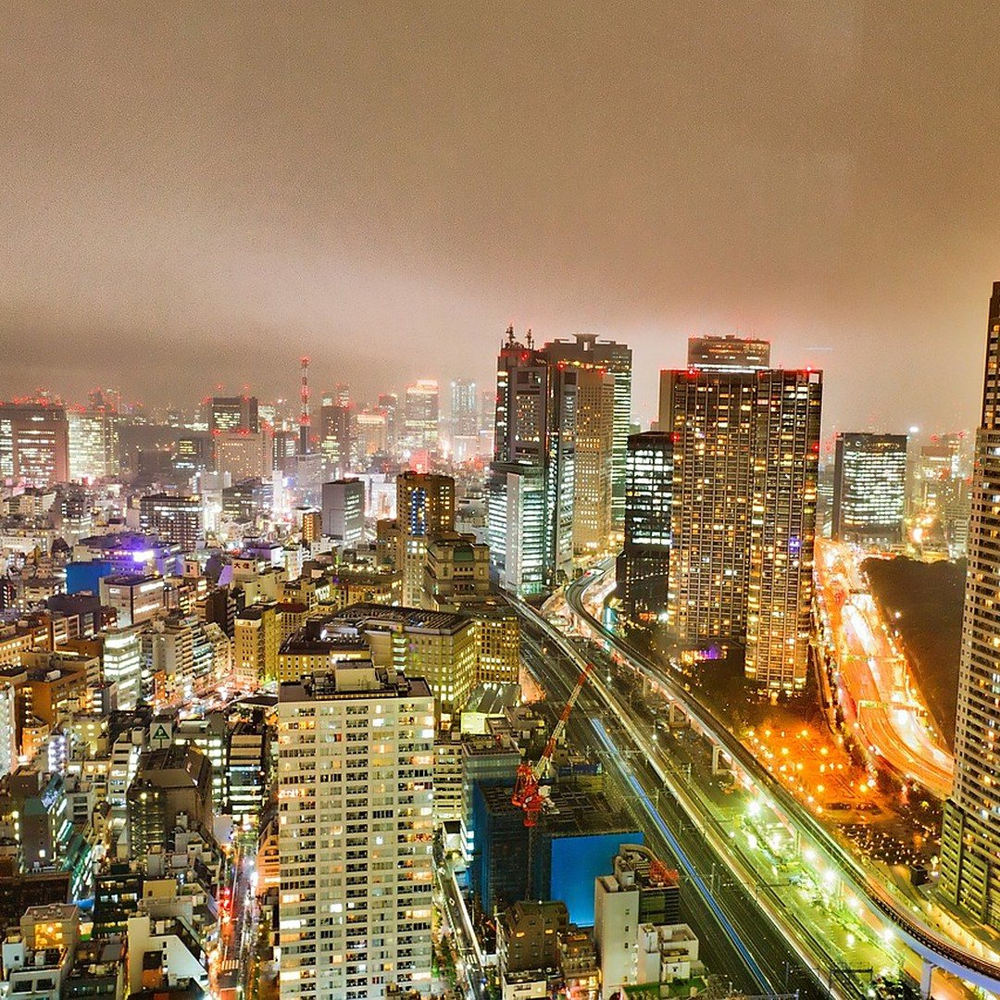
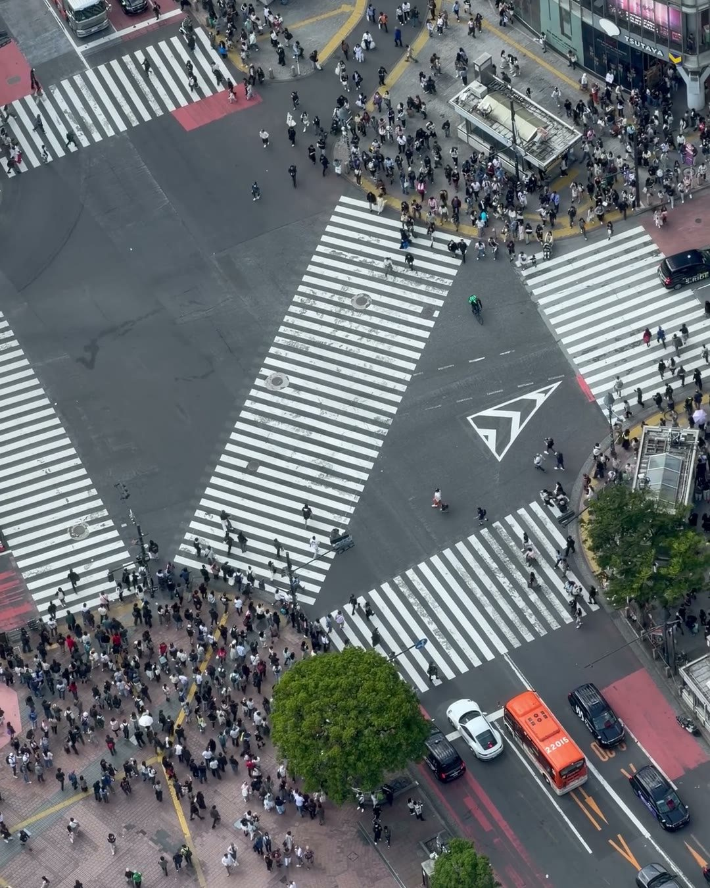
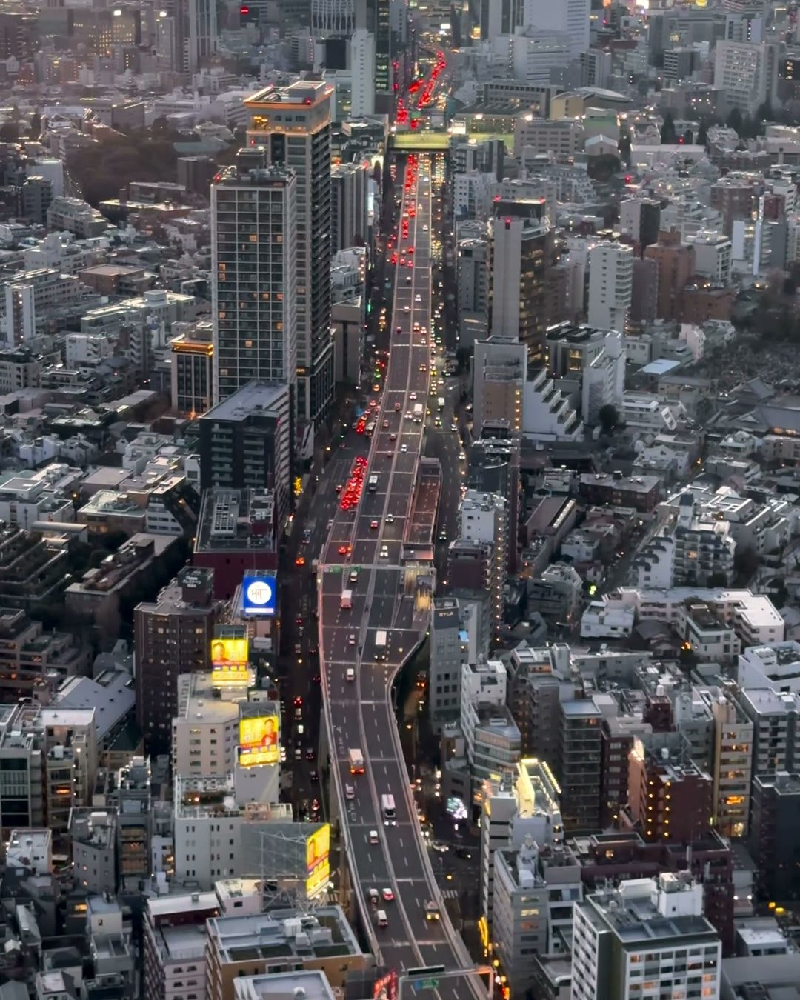
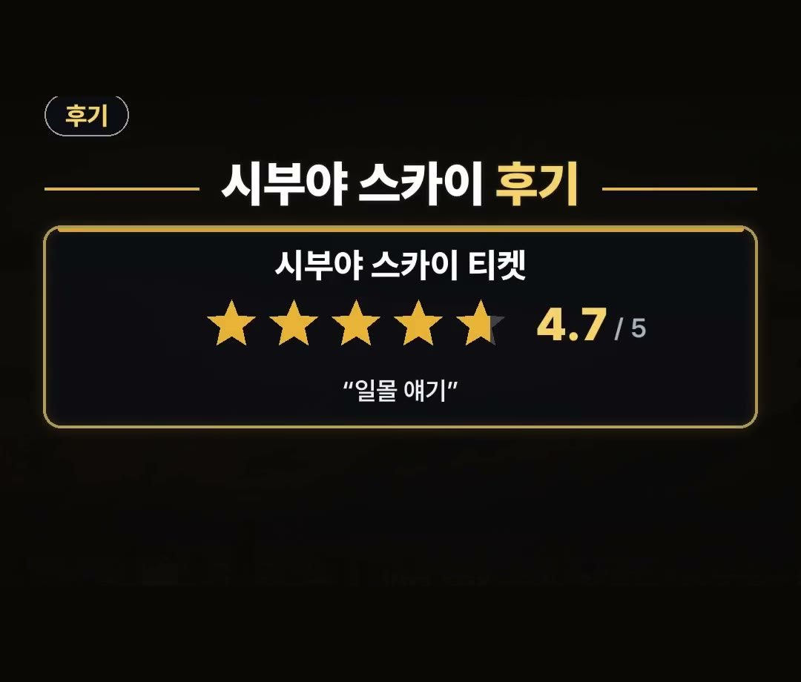

도쿄 혼자여행 놀거리, 시부야 스카이 3시 전 예매와 공항 36분 동선
※ 이 글에는 제휴 링크가 포함되어 있으며, 링크를 통해 예약·구매하시면 일정 수수료를 받을 수 있습니다. (가격은 같습니다)
※ 이 포스팅은 쿠팡 파트너스 활동의 일환으로, 이에 따른 일정액의 수수료를 제공받습니다.
시부야 스카이를 웹으로 예매할 때 오후 3시 전 입장은 2,700엔, 3시부터 입장은 3,400엔이에요.
같은 옥상 전망대라도 들어가는 시간에 따라 입장료가 이렇게 나뉘어요.
이 글에서는 도쿄 혼자여행을 준비할 때 시간대와 동선을 어떻게 잡으면 좋은지 차례대로 정리했습니다.
시부야 스카이는 웹 예매 기준으로 오후 3시 전 2,700엔, 3시부터 3,400엔!
이 시간 기준 하나만 기억하고 예약 화면을 열어 보세요 🗼 공항에서 시내로 들어가는 길과 혼밥 자리, 비 오는 날 코스까지 한 번에 정리해 봤어요.

도쿄 혼자여행, 왜 시부야 스카이부터 잡을까
혼자 떠나는 도쿄라면 첫 일정으로 시부야 스카이 옥상 전망대를 먼저 정해 두는 방법이 있어요.
전망대는 입장 시간에 따라 값이 달라서, 다른 일정을 짜기 전에 몇 시에 올라갈지부터 정해 두면 하루 동선이 깔끔해집니다.
혼자 다니는 여행은 일정을 바꾸기 쉬운 대신, 예약이 필요한 곳은 시간을 미리 정해 두는 편이 마음이 편해요.

오후 3시 전과 3시부터, 웹 예매 입장료
시부야 스카이 웹 예매 입장료는 입장 시간으로 나뉩니다.
- 오후 3시 전 입장: 2,700엔
- 3시부터 입장: 3,400엔
같은 전망대인데 시간대만 다르니, 낮 풍경을 보고 싶다면 오후 3시 전 시간대를 먼저 살펴보세요.
클룩의 「시부야 스카이 티켓」 상품은 2026년 11월 9일 기준 별점 4.7이고, 이용후기에는 일몰 이야기가 많이 보여요.
일몰을 꼭 보고 싶은지, 낮 풍경이면 충분한지 먼저 정하고 시간대를 고르면 됩니다.
공항에서 시내로, 스카이라이너 최단 36분
공항에 내려서 시내로 들어갈 때는 스카이라이너가 있어요.
- 나리타 공항에서 닛포리역까지: 최단 36분
혼자 짐을 들고 움직일 때는 갈아타는 횟수가 적은 길이 편합니다.
닛포리역에 도착한 뒤 숙소까지 가는 길도 미리 지도에서 확인해 두세요.
시내에 들어온 다음엔 식사 자리도 정해 두면 좋아요.
혼자 여행할 때 은근히 고민되는 게 식사예요.
이치란 라멘은 칸막이로 나뉜 1인 자리가 있어서 혼자서도 편하게 먹을 수 있어요.
도쿄 혼자여행에서 혼밥이 걱정된다면 이런 1인 자리가 있는 곳을 일정 사이에 하나 넣어 두세요.

비 오는 날 도쿄 혼자여행 놀거리, 팀랩 플래닛
옥상 전망대는 날씨 영향을 받는 곳이라, 비 오는 날 갈 실내 코스를 하나 정해 두면 좋아요.
- 맑으면: 시부야 스카이
- 비 오면: 실내 팀랩 플래닛
날씨 예보를 보고 두 곳의 순서를 바꾸는 식으로 일정을 짜면, 혼자여도 하루를 비워 두지 않고 움직일 수 있어요.
도쿄 혼자여행 하루 순서, 이렇게 짜 보세요
위 내용을 하루 흐름으로 묶으면 이런 순서가 됩니다.
- 도착하는 날: 스카이라이너로 닛포리역까지 이동(최단 36분)
- 맑은 날: 오후 3시 전 시간대로 시부야 스카이 웹 예매(2,700엔)
- 식사: 칸막이 1인 자리가 있는 이치란 라멘
- 비 오는 날: 시부야 스카이 대신 실내 팀랩 플래닛
일몰 시간대를 원한다면 3시부터 입장(3,400엔)으로 잡으면 되고, 낮 풍경이면 3시 전 시간대를 고르면 돼요.
혼자 다니는 일정은 이렇게 큰 줄기만 정해 두고, 날씨와 컨디션에 따라 순서를 바꾸는 편이 편합니다.
참고로 예약 전에 볼 만한 할인 조건도 정리해 둘게요.
클룩에서는 2월 28일까지 일본·한국 겨울 투어 및 활동에 15% 할인 코드를 쓸 수 있어요.
- 할인: 15%
- 최대: 1만 3천 원
- 기간: 2월 28일까지
조건이 있으니 결제 전에 적용되는 상품인지 확인하세요.

정리
- 시부야 스카이 웹 예매는 오후 3시 전 2,700엔, 3시부터 3,400엔이에요.
- 나리타 공항에서 닛포리역까지 스카이라이너로 최단 36분이에요.
- 혼밥은 칸막이 1인 자리가 있는 이치란 라멘, 비 오는 날은 실내 팀랩 플래닛으로 바꾸면 됩니다.
도쿄 혼자여행 동선을 짤 때 시간대부터 정해 보세요.
예약 링크는 아래에 모아 두었어요.
지금 쓸 수 있는 여행사 할인
- 🎟 클룩 일본·한국 겨울 투어 15% 할인 코드 「TNA2026JPKRWINTER15OFF」 (최대 1만 3천 원 · 2월 28일까지)
- 🎟 클룩 일본 어트랙션 5% 할인 코드 「일본어트랙션5%」 (최소 구매 금액 없음 · 최대 4천 원 · 일부 상품 제외 · 쿠폰 취소 시 재발행 불가 · 예산 소진 시 조기 종료 · 12월 31일까지)
※ 여행사 사정으로 조건이 바뀌거나 일찍 끝날 수 있어요. 예약 전에 여행사 화면에서 한 번 더 확인하세요. (2026-10-05 확인)
TOKYO도쿄FREE📘 무료 도쿄 가이드 전자책공항·교통 · 돈 아끼는 법 · 맛집 · 벌금·주의 · 귀국 날 · 체크리스트무료로 보기 ›📌 2026년 11월 기준 정보예요. 가격은 환율·시기에 따라 달라질 수 있어요.
· 게이세이 전철 스카이라이너 & 도쿄 서브웨이 티켓 (as little as 36 minutes · 24, 48 or 72 hours)
· 재팬 트래블 키트 팀랩 도쿄 티켓 (Planets is from ¥3,800 for an adult)
사진·영상영상 화면: Pexels (Ali Alcántara, Heather Mallon, Nelemson G, Pachon in Motion, Rin Gakusho, Stephan Leuzinger)
사진: Pexels (Sarmat Batagov)
사진: Pixabay (SZimmermann_DE)